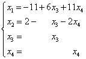
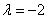

4.2 非齐次线性方程组
一、非齐次线性方程组解的结构
| 对于n元非齐次线性方程组 要特别注意到：由于非齐次性，即，则方程组 对任一个非齐次线性方程组 |
|
性质1：如果是非齐次线性方程组 因为 性质2：如果是非齐次线性方程组 因为 由性质1和性质2可知：
|
|
例1：设 解：由定理2。1，非齐次线性方程组的通解由两部分相加组成，一部分是本身方程组的一个特解，另一部分是对应导出组的通解，即对应导出组的基础解系的任意线性组合对本题可取 因为都是 就是 ， |
二、非齐次线性方程组的通解的求法
| 在非齐次线性方程组 例2：求的通解。 解： 因此， 方程组的一般解为  ，即， ，即，
则取为一个特解。 为导出组的一个基础解系，从而方程组的通解为 （为任意常数） |
|
例3：当参数a为何值时，方程组有解？当它有解时，求出它的通解。 解： 当时，，方程组有无穷多解，且一般解为，则方程组的通解为（为任意常数） 显然，当时，，则方程组无解。 |
|
例4：参数 解：因为方程个数与未知量个数相同，又参数出现在系数矩阵中，作初等行变换比较麻烦，所以用克兰姆法则，即系数矩阵A的行列式入手 （1）当 （2）当时， 可见，则方程组无解 （3）当时， 可见，则方程组有无穷多解，且一般解为 所以方程组的通解为（为任意常数） |
请认真答题，测试一下你对前面知识点的学习情况！
(单选题) 19．
【答案】D
【解析】
【知识点】非齐次线性方程组解的结构
请认真答题，测试一下你对前面知识点的学习情况！
(单选题) 20．已知某个3元非齐次线性方程组Ax=b的增广矩阵经初等行变换化为：，若方程组无解，则a的取值为( )
【答案】A
【解析】只有当时，方程组无解，故要求，解得a=0..
【知识点】非齐次线性方程组的通解的求法